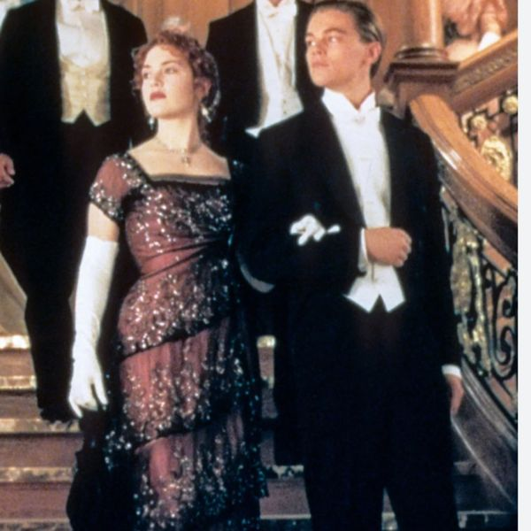

Episode 16 · May 15, 2026 · 26 min
Decoding Wedding Dress Codes
▶ Play this episode
Show Notes
🚨💍 This week on The Wedding Police, Penny and Jim are laying down the law on wedding dress codes! From black tie confusion and cocktail attire crimes to guests who somehow interpret “formal” as “flip-flops welcome,” the duo breaks down the dos, don’ts, and fashion felonies that can make or break a wedding day. Expect hilarious hot takes, etiquette citations, and plenty of laughs as they help couples and guests decode what to wear — and what should never see the dance floor.
🚨 Never Miss a Case
New episodes every week. Follow The Wedding Police so the next one lands in your feed.
Enjoying it? A quick rating on Apple Podcasts or Spotify helps new couples find the show.